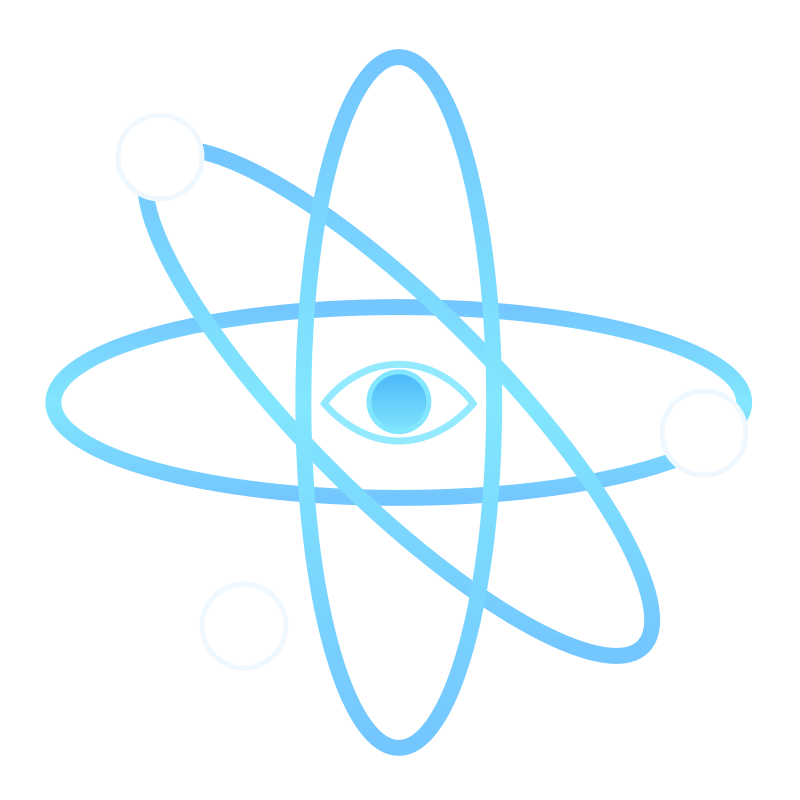
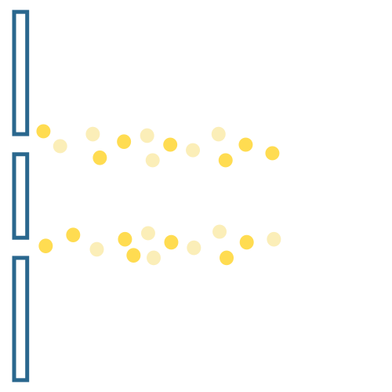

The Pillars of Modern Physics:
Quantum Mechanics


Quantum is an important concept in modern physics.
If a physical quantity has the smallest indivisible fundamental unit, the physical quantity is quantized.
It can describe energy as well as matter, and is the minimun unit of measurement that physicists use to explain the wave-particle duality in the microcosmic world.
In addition, quantum is a manifestation of the discontinuity of the world, namely that space, time, matter and energy are all discontinuous.
In 1935, Edwin Schrodinger came up with the world's most famous thought experiment — Schrodinger's cat, which would be in an awkward state of uncertainty in a sealed box of radioactive material. The bizarre principle of quantum theory would mean that the cat would be both dead and alive, and its state would only be determined once the box was opened.
In 1807, Thomas Young proposed an experiment demonstrating the wave and particle properties of microscopic objects. A microscopic object can travel from its initial point to its final point by either or both paths at the same time. The difference between these two paths causes the quantum states that describe the physical behavior of microscopic objects to phase shift, resulting in interference.



{kind=link}
{kind=link}
{kind=link}
{kind=link}
{kind=link}